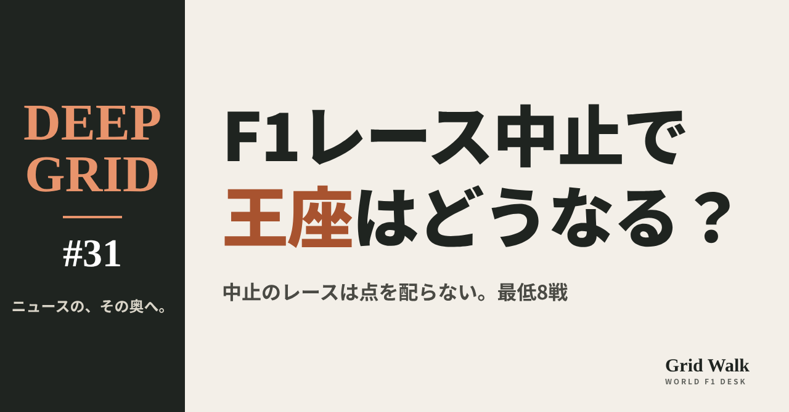
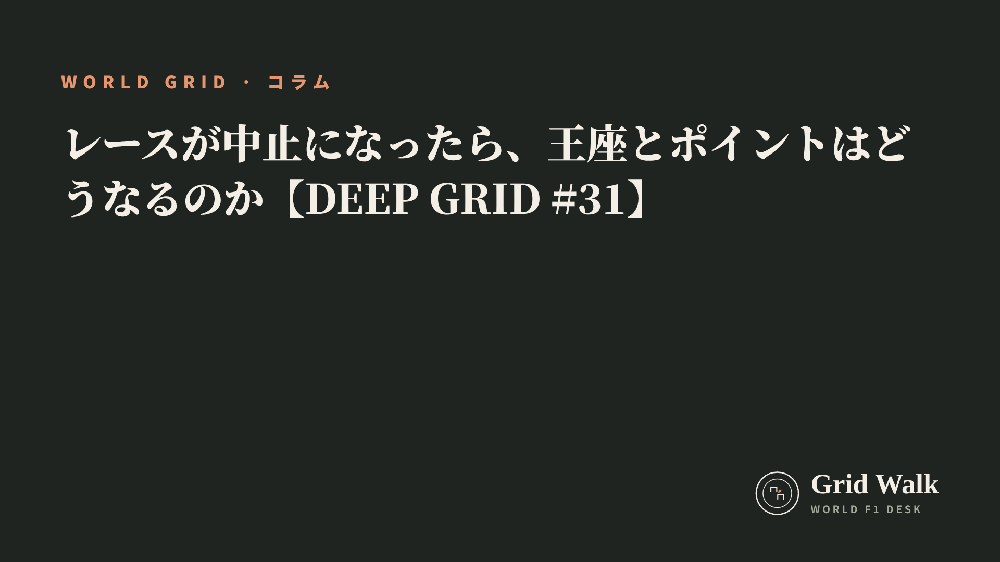
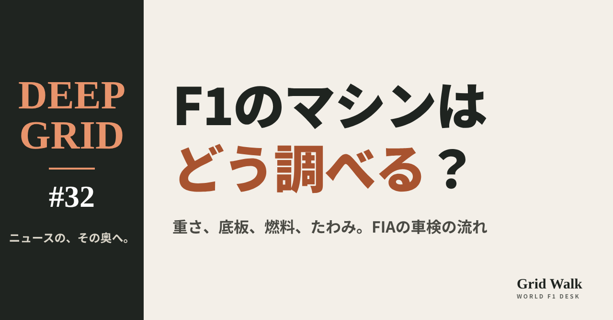
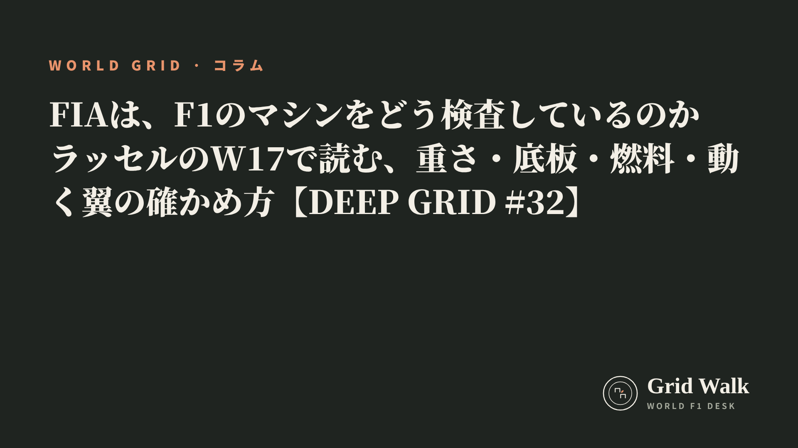
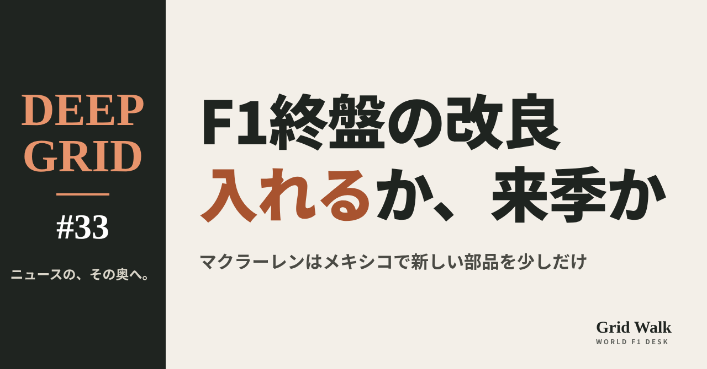

<meta charset="utf-8"><title>DEEP GRID #31〜#33 note貼り付け</title>
<style>
/* one column of numbered paste steps; text steps vs image steps differ by marker */
:root{--bg:#F5F4F0;--card:#FFFFFF;--ink:#1D2321;--mute:#5F665F;--line:#DCDAD2;--btn:#1F5FBF;--btnok:#2E8B4F;--img:#E9F3EC;--imgink:#22663B;--sans:'IBM Plex Sans JP','Hiragino Sans','Noto Sans JP',sans-serif}
@media (prefers-color-scheme:dark){:root:not([data-theme="light"]){--bg:#171A19;--card:#202423;--ink:#ECEDE8;--mute:#A3AAA2;--line:#343937;--btn:#4D8BE6;--btnok:#3FA866;--img:#1E2C23;--imgink:#8FD3A6;color-scheme:dark}}
:root[data-theme="dark"]{--bg:#171A19;--card:#202423;--ink:#ECEDE8;--mute:#A3AAA2;--line:#343937;--btn:#4D8BE6;--btnok:#3FA866;--img:#1E2C23;--imgink:#8FD3A6;color-scheme:dark}
body{background:var(--bg);color:var(--ink);font-family:var(--sans);font-size:15px;line-height:1.75;padding:20px 16px 60px}
main{max-width:680px;margin:0 auto;display:grid;gap:28px}
header h1{font-size:22px;margin:0 0 6px;text-wrap:balance}
header p{margin:0;color:var(--mute);font-size:14px}
nav{display:flex;gap:8px;flex-wrap:wrap;margin-top:12px}
nav a{border:1px solid var(--line);border-radius:999px;padding:4px 14px;color:var(--ink);text-decoration:none;font-size:14px;background:var(--card)}
.part h2{font-size:18px;line-height:1.5;margin:0 0 12px;text-wrap:balance;display:flex;gap:10px;align-items:baseline;flex-wrap:wrap}
.tag{font-size:13px;background:var(--ink);color:var(--bg);border-radius:6px;padding:1px 9px}
.steps{list-style:none;margin:0;padding:0;display:grid;gap:12px}
.st{background:var(--card);border:1px solid var(--line);border-radius:12px;padding:12px;min-width:0}
.hd{display:flex;align-items:center;gap:8px;margin-bottom:8px}
.no{width:26px;height:26px;border-radius:50%;background:var(--btn);color:#fff;display:inline-flex;align-items:center;justify-content:center;font-size:13px;font-weight:700;flex:0 0 26px}
.im .no{background:var(--btnok)}
.hd em{font-style:normal;font-size:12px;background:var(--img);color:var(--imgink);border-radius:6px;padding:0 8px}
.bx{font-size:13.5px;line-height:1.7;border:1px solid var(--line);border-radius:8px;padding:8px 10px;max-height:110px;overflow:auto;overflow-wrap:anywhere}
.bx.tall{max-height:150px}.bx p{margin:0 0 6px}.bx h2{font-size:14px;margin:8px 0 4px}.bx a{color:var(--btn)}
.st img{display:block;width:100%;max-width:100%;border:1px solid var(--line);border-radius:8px}
.sub{font-size:12.5px;color:var(--mute);margin:6px 0 0}
.cp{width:100%;margin-top:8px;padding:12px;border:0;border-radius:10px;background:var(--btn);color:#fff;font:600 15px var(--sans);cursor:pointer}
.cp.ok{background:var(--btnok)}.cp.dl{background:var(--btnok)}.cp:focus-visible{outline:3px solid var(--ink);outline-offset:2px}
.xh{font-size:15px;margin:20px 0 10px}
.fb{font-size:13px;line-height:1.7;margin:8px 0 0;padding:8px 10px;border-radius:8px;background:var(--img);color:var(--imgink)}
.opts{display:grid;grid-template-columns:repeat(auto-fill,minmax(240px,1fr));gap:10px}
.opt{min-width:0}.opt img{display:block;width:100%;border:1px solid var(--line);border-radius:8px}
.ol{display:flex;align-items:center;gap:8px;margin-top:6px}.ol b{font-size:13px;flex:0 0 auto}.ol .on{font-size:12.5px;color:var(--mute);flex:1;min-width:0}.ol .cp{width:auto;flex:0 0 auto;padding:9px 14px}.ol .cp{margin:0;padding:9px}
.toast{font-size:13px;color:var(--mute);margin-top:6px}
</style>
<main><header><h1>DEEP GRID #31〜#33 note貼り付け</h1><p>3本あります。青い番号は文章、緑は画像です。</p><nav><a href="#p1">#31</a><a href="#p2">#32</a><a href="#p3">#33</a></nav></header><section class="part" id="p1"><h2><span class="tag">DEEP GRID #31</span>レースが中止になったら、王座とポイントはどうなるのか【DEEP GRID #31】</h2><ol class="steps">
<li class="st im"><div class="hd"><span class="no">1</span><b>見出し画像</b><em>画像</em></div><button class="cp dl" data-img="img/cancelled-races-title.png" data-name="deep-cancelled-races-title_見出し画像.png">ダウンロード</button></li>
<li class="st"><div class="hd"><span class="no">2</span><b>タイトル</b></div><div class="bx" id="p1t">レースが中止になったら、王座とポイントはどうなるのか【DEEP GRID #31】</div><button class="cp" data-plain="p1t">タイトルをコピー</button></li>
<li class="st"><div class="hd"><span class="no">3</span><b>本文</b></div><div class="bx tall" id="p1r"><p>今季の最後に残るカタールとアブダビの2戦は、中東の情勢を理由に、開けるかどうかを心配されてきた。もし開けなければ、点はどうなり、選手権は成り立つのか。カレンダーはだれが変えるのか。FIAの規則の条文と、2020年、2023年、2026年に実際に消えたレースから読み解く。</p><p>データの表と、出典19件はサイトで → <a href="https://f1gridwalk.github.io/deep/cancelled-races-title/?utm_source=note&amp;utm_campaign=cancelled-races-title">https://f1gridwalk.github.io/deep/cancelled-races-title/?utm_source=note&amp;utm_campaign=cancelled-races-title</a></p><h2>先に結論</h2><p>① 中止になったレースの点は、だれにも入らない。王者は、実際に行われた大会の点だけで決まる（FIAのF1規則 A2.1.4 a）。中止の分を、ほかのレースの点で埋め合わせることもない。</p><p>② 選手権に必要なのは最低8戦で、最大は24戦（A2.1.2）。今季はアメリカGPまでに18戦が終わっていて、カタールとアブダビがなくなっても、選手権が成り立たなくなる心配はない。</p><p>③ 大会を延期や中止にできるのは、不可抗力か安全の理由があるときなど（国際モータースポーツ競技規則 2.1.6 a）。今季のカレンダーは、バーレーンとサウジアラビアの中止のあと、3月26日にFIAの世界モータースポーツ評議会（WMSC）が修正した。</p><p>④ 始まったのに途中で終わったレースは、別の決まりになる。先頭が走った距離で点が減り、2周に届かなければ点なし、75％以上なら通常の点（A2.2.1）。2022年の鈴鹿の混乱のあと、中断から再開したかどうかに関係なく、短いレースでは点を減らす形に改められた。</p><p>⑤ メキシコシティGPの前の時点（10月30日）で、アントネッリと2位ラッセルの差は123点。中止で残りのレースが1戦でも減れば、残りの最大は100点以下になる。メキシコシティGPの前に中止が決まれば、その時点で数字の上ではだれも追いつけなくなる（編集部の計算）。</p><p><strong>あなたは、レースが中止になったときの決まりを変えるべきだと思いますか？</strong></p><h2>続きは F1 Grid Walk で</h2><p>ここから先の「中止のレースは、点の上では「なかった」ことになる」「選手権は、何戦あれば成り立つのか」「途中で終わったレースの点」「これまでの中止は、どう決まったか」「カタールとアブダビが開けなかったら」は、サイトで読めます。短縮レースのポイント（A2.2.1）、中止とカレンダーの決まり、消えたレース、変わったカレンダーの例、メキシコシティGPの前の時点（10月30日）と、残りの最大の点の表も載せています。</p><p><strong>DEEP GRID #31「レースが中止になったら、王座とポイントはどうなるのか」</strong></p><p><a href="https://f1gridwalk.github.io/deep/cancelled-races-title/">https://f1gridwalk.github.io/deep/cancelled-races-title/</a></p><p>━━━━━━━━━━</p><p><strong>F1 Grid Walk では、世界のF1ニュースを毎日日本語でまとめています。</strong></p><p>海外の記事の要約を、毎日載せています。</p><p>ほかの海外記事も読みたい方は、F1 Grid Walkへ。</p><p><a href="https://f1gridwalk.github.io/">https://f1gridwalk.github.io/</a></p><p>━━━━━━━━━━</p><p><a href="https://www.fia.com/system/files/documents/fia_2026_f1_regulations_-_section_a_general_provisions_-_iss_02_-_2026-02-27.pdf">出典：FIA</a></p><p><a href="https://www.fia.com/system/files/documents/2026_international_sporting_code_fr-en_clean_version_25.06.2026.pdf">出典：FIA</a></p><p><a href="https://www.fia.com/news/2026-fia-sporting-calendars-approved-world-motor-sport-council">出典：FIA</a></p><p><a href="https://www.fia.com/news/fia-and-formula-1-announce-2026-sprint-calendar">出典：FIA</a></p><p><a href="https://www.formula1.com/en/latest/article/bahrain-and-saudi-arabian-grands-prix-will-not-take-place-in-april.1hnqllVG85RSt8pbFc5Ivx">出典：F1公式サイト</a></p><p><a href="https://www.formula1.com/en/racing/2026">出典：F1公式サイト</a></p><p><a href="https://www.formula1.com/en/results/2026/drivers">出典：F1公式サイト</a></p><p><a href="https://www.formula1.com/en/latest/article/breaking-update-on-the-emilia-romagna-grand-prix-at-imola.14xk8GLh2Lr8wBGdJqhxnO">出典：F1公式サイト</a></p><p><a href="https://www.formula1.com/en/latest/article/record-breaking-22-race-f1-calendar-set-for-2020.7vdbREiAYJKP5Ey8whglC2">出典：F1公式サイト</a></p><p><a href="https://www.formula1.com/en/latest/article/f1-hoping-to-announce-next-chunk-of-2020-calendar-dates-in-next-few-weeks.5OisnNhKjhev2TF98RvcWs">出典：F1公式サイト</a></p><p><a href="https://www.formula1.com/en/latest/article.formula-1-confirms-its-not-possible-to-race-in-brazil-usa-mexico-and-canada.66ZjLAp4qDgqhs3T8BbIQS.html">出典：F1公式サイト</a></p><p><a href="https://www.formula1.com/en/latest/article/formula-1-to-return-to-turkey-istanbul-park-as-four-more-races-added-to-F1-calendar.2cVIVl0QDr4OiZa7rPt7Zg">出典：F1公式サイト</a></p><p><a href="https://www.formula1.com/en/latest/article/f1-commission-approves-changes-to-sporting-regulations-regarding-%D0%B0%D1%87%D0%BA%D1%96-for.10aFBCNICC0dajLVnOAzia">出典：F1公式サイト</a></p><p><a href="https://www.autosport.com/f1/news/how-many-races-does-formula-1-need-to-declare-a-season-4983325/4983325/">出典：Autosport</a></p><p><a href="https://www.autosport.com/f1/news/why-verstappen-was-crowned-champion-despite-shortened-japanese-gp/10382058/">出典：Autosport</a></p><p><a href="https://www.skysports.com/f1/news/12433/12816819/formula-one-alters-shortened-race-rule-after-max-verstappens-title-confusion-at-2022-japanese-gp">出典：Sky Sports</a></p><p><a href="https://www.gpfans.com/en/f1-news/1092138/fia-postpones-extreme-h-world-cup-saudi-arabia-f1-calendar-qatar-abu-dhabi/">出典：GPFans</a></p><p><a href="https://www.motorsportmagazine.com/articles/single-seaters/f1/f1s-next-calendar-puzzle-who-replaces-qatar-and-abu-dhabi/">出典：Motor Sport Magazine</a></p><p><a href="https://www.speedweek.com/en/a/formula-1/gp-cancellations-qatar-and-abu-dhabi-at-serious-risk-formula-1-s-reprieve">出典：SPEEDWEEK.com</a></p></div><button class="cp" data-rich="p1r">本文をコピー</button></li>
<li class="st"><div class="hd"><span class="no">4</span><b>ハッシュタグ</b></div><div class="bx" id="p1h">#F1 #F1jp #DEEPGRID #F1解説 #F1ルール #王座争い</div><button class="cp" data-plain="p1h">タグをコピー</button></li>
</ol><h3 class="xh">X</h3><ol class="steps">
<li class="st im"><div class="hd"><b>X用の画像</b><em>画像</em></div><button class="cp dl" data-img="img/x_cancelled-races-title.png" data-name="x_deep-cancelled-races-title.png">ダウンロード</button></li>
<li class="st"><div class="hd"><b>① noteをシェアするときの文</b></div><div class="bx" id="p1x0">中東の2戦が開けなかったら、王座とポイントはどうなるのか。最低8戦、中止のレースは点を配らない、短縮レースのポイント表まで、規則でDEEP GRIDが読み解きました #F1jp #DEEPGRID</div><button class="cp" data-plain="p1x0">コピー</button></li>
<li class="st"><div class="hd"><b>② ①への返信</b></div><div class="bx" id="p1x1">ほかの海外記事も読みたい方は、F1 Grid Walkへ。
https://f1gridwalk.github.io/deep/cancelled-races-title/?utm_source=x&amp;utm_campaign=cancelled-races-title</div><button class="cp" data-plain="p1x1">コピー</button></li>
<li class="st"><div class="hd"><b>③ ②への返信</b></div><div class="bx" id="p1x2">毎日の海外F1ニュースは、日本語でこちらにまとめています。
https://f1gridwalk.github.io/</div><button class="cp" data-plain="p1x2">コピー</button></li>
</ol></section><section class="part" id="p2"><h2><span class="tag">DEEP GRID #32</span>FIAは、F1のマシンをどう検査しているのか　ラッセルのW17で読む、重さ・底板・燃料・動く翼の確かめ方【DEEP GRID #32】</h2><ol class="steps">
<li class="st im"><div class="hd"><span class="no">1</span><b>見出し画像</b><em>画像</em></div><button class="cp dl" data-img="img/fia-car-inspection.png" data-name="deep-fia-car-inspection_見出し画像.png">ダウンロード</button></li>
<li class="st"><div class="hd"><span class="no">2</span><b>タイトル</b></div><div class="bx" id="p2t">FIAは、F1のマシンをどう検査しているのか　ラッセルのW17で読む、重さ・底板・燃料・動く翼の確かめ方【DEEP GRID #32】</div><button class="cp" data-plain="p2t">タイトルをコピー</button></li>
<li class="st"><div class="hd"><span class="no">3</span><b>本文</b></div><div class="bx tall" id="p2r"><p>アメリカGPのあと、FIAは8位のジョージ・ラッセルのメルセデスW17を部品まで調べ、規則に合っていると発表した。PlanetF1によると、上位10台から無作為に1台を選ぶ、いつもの手続きだった。F1の車検は、金曜の朝の申告から決勝後の分解まで続く。何を、いつ、どう測るのか。なぜ違反はほとんど失格になり、なぜ全車は調べないのかを読む。</p><p>データの表と、出典25件はサイトで → <a href="https://f1gridwalk.github.io/deep/fia-car-inspection/?utm_source=note&amp;utm_campaign=fia-car-inspection">https://f1gridwalk.github.io/deep/fia-car-inspection/?utm_source=note&amp;utm_campaign=fia-car-inspection</a></p><h2>先に結論</h2><p>① アメリカGPのあと、FIAは上位10台から無作為に選んだ1台として、8位のラッセルの63号車（メルセデスW17）を詳しく調べた。対象はエンジンの吸気を冷やす仕組み、センサーと配線、SECU（標準ECU）へのつなぎで、すべて規則に合っていた（FIAの技術代表の文書、PlanetF1）。</p><p>② 検査は大会のはじめから終わりまで続く。チームが出す申告書、走行中のデータの確認、予選での計量と燃料の見本、予選から決勝まで設定を固めるパルクフェルメ、決勝後の計量と底板のすり減りの確認。結果は技術代表の報告として、大会ごとにFIAのサイトに出る。</p><p>③ 測るものは、重さ、底板（プランク）の厚さ、燃料の成分、翼や床のしなり（たわみ）、部品の形とソフトウェアの版など。2026年は、動く翼（アクティブエアロ）の切り替え時間を、ほぼ毎セッション全車で確かめている。</p><p>④ 違反が見つかると、ほとんどは失格だ。2023年アメリカGPのハミルトンとルクレールは底板のすり減り、2024年ベルギーGPのラッセルは重さ1.5kg不足で、ゴール後に結果を失った。チームの事情は、罰を軽くする理由としてほぼ認められない。</p><p>⑤ 一方で、FIAは全車の全部品を調べるのは「不可能」だと認め、無作為の抜き取りを抑止力と説明する。2023年には、調べられなかった車にも違反があったのでは、という声がドライバーから出た。厳しい罰と抜き取りの組み合わせが、F1の検査の形だ。</p><p><strong>あなたは、F1の車検は全部の車でやるべきだと思いますか？</strong></p><h2>続きは F1 Grid Walk で</h2><p>ここから先の「ラッセルの63号車は、なぜ調べられたのか」「金曜の朝から日曜の夜まで：検査はいつあるのか」「重さ、底板、燃料、たわみ：何をどう測るのか」「2026年の新しい項目：動く翼の確かめ方」「失格はなぜ厳しく、なぜ全部は調べないのか」は、サイトで読めます。検査の種類（2026年）、2026年アメリカGPで、63号車が受けた主な検査、主な失格の例（技術的な違反）、前の翼のたわみ試験は、どう厳しくなったか（2025年）の表も載せています。</p><p><strong>DEEP GRID #32「FIAは、F1のマシンをどう検査しているのか　ラッセルのW17で読む、重さ・底板・燃料・動く翼の確かめ方」</strong></p><p><a href="https://f1gridwalk.github.io/deep/fia-car-inspection/">https://f1gridwalk.github.io/deep/fia-car-inspection/</a></p><p>━━━━━━━━━━</p><p><strong>F1 Grid Walk では、世界のF1ニュースを毎日日本語でまとめています。</strong></p><p>海外の記事の要約を、毎日載せています。</p><p>ほかの海外記事も読みたい方は、F1 Grid Walkへ。</p><p><a href="https://f1gridwalk.github.io/">https://f1gridwalk.github.io/</a></p><p>━━━━━━━━━━</p><p><a href="https://www.planetf1.com/news/fia-george-russell-mercedes-w17-inspection-austin">出典：PlanetF1</a></p><p><a href="https://www.fia.com/documents/championships/fia-formula-one-world-championship-14/season/season-2026-2072">出典：FIA</a></p><p><a href="https://www.fia.com/documents/championships/fia-formula-one-world-championship-14/season/season-2026-2072/event/United%20States%20Grand%20Prix">出典：FIA</a></p><p><a href="https://www.fia.com/system/files/decision-document/2026_united_states_grand_prix_-_p3_and_qualifying_scrutineering.pdf">出典：FIA</a></p><p><a href="https://www.fia.com/system/files/decision-document/2026_miami_grand_prix_-_race_scrutineering.pdf">出典：FIA</a></p><p><a href="https://www.fia.com/system/files/decision-document/2026_british_grand_prix_-_race_scrutineering.pdf">出典：FIA</a></p><p><a href="https://www.fia.com/system/files/decision-document/2026_australian_grand_prix_-_self_scrutineering.pdf">出典：FIA</a></p><p><a href="https://www.fia.com/system/files/documents/fia_2026_f1_regulations_-_section_b_sporting_-_iss_08_-_2026-08-05_7.pdf">出典：FIA</a></p><p><a href="https://api.fia.com/system/files/documents/fia_2026_f1_regulations_-_section_c_technical_-_iss_17_-_2026-04-28.pdf">出典：FIA</a></p><p><a href="https://api.fia.com/news/fia-insights-how-fias-process-post-race-legality-checks-ensure-fairness-formula-1">出典：FIA</a></p><p><a href="https://api.fia.com/news/fia-insights-staying-ahead-curve-why-fia-stiffening-tests-around-wing-flexibility">出典：FIA</a></p><p><a href="https://www.formula1.com/en/latest/article/explained-everything-you-need-to-know-about-the-spanish-grand-prix-front.60dW3xB6esCkvCXbihD9FH">出典：F1公式サイト</a></p><p><a href="https://www.gpblog.com/en/breaking-news/pit-lane-start-confirmed-at-united-states-grand-prix">出典：GPblog</a></p><p><a href="https://grandepremio.com/en/f1/stroll-handed-pit-lane-start-after-aston-martin-breaches-parc-ferme-rules-at-us-gp/">出典：Grande Prêmio</a></p><p><a href="https://www.fia.com/sites/default/files/decision-document/2023%20United%20States%20Grand%20Prix%20-%20Plank%20checks.pdf">出典：FIA</a></p><p><a href="https://www.fia.com/sites/default/files/decision-document/2023%20United%20States%20Grand%20Prix%20-%20Infringement%20-%20Car%2044%20-%20Technical%20non-compliance%20(Plank).pdf">出典：FIA</a></p><p><a href="https://www.formula1.com/en/latest/article/breaking-hamilton-and-leclerc-disqualified-from-united-states-grand-prix-for.10nvuyvEPfMgoeWxWOhw0a">出典：F1公式サイト</a></p><p><a href="https://www.fia.com/sites/default/files/decision-document/2024%20Belgian%20Grand%20Prix%20-%20Weight%20of%20Car%20Number%2063.pdf">出典：FIA</a></p><p><a href="https://www.fia.com/sites/default/files/decision-document/2024%20Belgian%20Grand%20Prix%20-%20Infringement%20-%20Car%2063%20-%20Technical%20non-compliance%20(Weight).pdf">出典：FIA</a></p><p><a href="https://www.autosport.com/f1/news/explained-the-f1-car-weight-rule-that-cost-russell-belgian-gp-victory/10640005/">出典：Autosport</a></p><p><a href="https://www.fia.com/system/files/decision-document/2025_las_vegas_grand_prix_-_infringement_-_car_4_-_technical_non-conformity_plank_assembly.pdf">出典：FIA</a></p><p><a href="https://www.racefans.net/2025/11/23/official-norris-and-piastri-disqualified-from-las-vegas-grand-prix/">出典：RaceFans</a></p><p><a href="https://www.planetf1.com/news/isack-hadjar-disqualified-miami-gp-qualifying-rb22-floor-illegal">出典：PlanetF1</a></p><p><a href="https://www.the-race.com/formula-1/fia-defence-f1-scrutineering-practical-impossible-hamilton-leclerc/">出典：The Race</a></p><p><a href="https://www.the-race.com/formula-1/f1-drivers-suspect-more-illegalities-among-unchecked-cars/">出典：The Race</a></p></div><button class="cp" data-rich="p2r">本文をコピー</button></li>
<li class="st"><div class="hd"><span class="no">4</span><b>ハッシュタグ</b></div><div class="bx" id="p2h">#F1 #F1jp #DEEPGRID #F1解説 #車検 #FIA</div><button class="cp" data-plain="p2h">タグをコピー</button></li>
</ol><h3 class="xh">X</h3><ol class="steps">
<li class="st im"><div class="hd"><b>X用の画像</b><em>画像</em></div><button class="cp dl" data-img="img/x_fia-car-inspection.png" data-name="x_deep-fia-car-inspection.png">ダウンロード</button></li>
<li class="st"><div class="hd"><b>① noteをシェアするときの文</b></div><div class="bx" id="p2x0">FIAはF1のマシンをどう検査しているのか。ラッセルのW17を入り口に、重さ・底板・燃料・動く翼の確かめ方と、失格の例をDEEP GRIDで深掘りしました #F1jp #DEEPGRID</div><button class="cp" data-plain="p2x0">コピー</button></li>
<li class="st"><div class="hd"><b>② ①への返信</b></div><div class="bx" id="p2x1">ほかの海外記事も読みたい方は、F1 Grid Walkへ。
https://f1gridwalk.github.io/deep/fia-car-inspection/?utm_source=x&amp;utm_campaign=fia-car-inspection</div><button class="cp" data-plain="p2x1">コピー</button></li>
<li class="st"><div class="hd"><b>③ ②への返信</b></div><div class="bx" id="p2x2">毎日の海外F1ニュースは、日本語でこちらにまとめています。
https://f1gridwalk.github.io/</div><button class="cp" data-plain="p2x2">コピー</button></li>
</ol></section><section class="part" id="p3"><h2><span class="tag">DEEP GRID #33</span>F1の終盤、マクラーレンはなぜメキシコで改良を入れないのか【DEEP GRID #33】</h2><ol class="steps">
<li class="st im"><div class="hd"><span class="no">1</span><b>見出し画像</b><em>画像</em></div><button class="cp dl" data-img="img/late-season-upgrades.png" data-name="deep-late-season-upgrades_見出し画像.png">ダウンロード</button></li>
<li class="st"><div class="hd"><span class="no">2</span><b>タイトル</b></div><div class="bx" id="p3t">F1の終盤、マクラーレンはなぜメキシコで改良を入れないのか【DEEP GRID #33】</div><button class="cp" data-plain="p3t">タイトルをコピー</button></li>
<li class="st"><div class="hd"><span class="no">3</span><b>本文</b></div><div class="bx tall" id="p3r"><p>マクラーレンはメキシコシティGPに新しい部品をほとんど持ち込まず、残りの改良をブラジルとラスベガスに回す。シーズンの終わりが近づくと、新しい部品は「何戦使えるか」と「来季に何が残るか」で値打ちが変わる。予算上限、風洞とCFDの上限、2027年の車づくり、そしてFIAに出す部品の申告の数から、終盤の改良の考え方を読む。</p><p>データの表と、出典28件はサイトで → <a href="https://f1gridwalk.github.io/deep/late-season-upgrades/?utm_source=note&amp;utm_campaign=late-season-upgrades">https://f1gridwalk.github.io/deep/late-season-upgrades/?utm_source=note&amp;utm_campaign=late-season-upgrades</a></p><h2>先に結論</h2><p>① マクラーレンは、メキシコシティGP（10月30日〜11月1日）に新しい部品をほとんど持ち込まず、残りの改良をサンパウロGP（ブラジル）とラスベガスGPに回す。アンドレア・ステラ代表は「メキシコでは多くはないが、ブラジルとラスベガスではいくつか改良がある」と話した（RacingNews365）。チームは、オースティンで入れた前後のコーナーまわりの変更を、メキシコで仕上げるとしている（マクラーレン公式）。</p><p>② シーズンの終わりが近いほど、新しい部品の値打ちは下がる。使えるレースが少ないからだ。フェラーリのフレデリック・バスール代表は、最後の2戦で0.2秒ほど速くなるより、5戦で0.2秒ほど速くなるほうがいいという考えを示した（The Race）。</p><p>③ 改良に使うお金と、風洞・CFDの量は、今季の車と来季の車で同じ枠から出る。ステラ代表は2025年、CFDと風洞のテストは「同じ鍋から出る」と話した（Motorsport Week）。ウィリアムズのジェームズ・ボウルズ代表は「今年のためのことをすれば、将来の自分を遅くする」と話している（The Race）。</p><p>④ マクラーレンのロブ・マーシャルは、2027年の規則の変更は控えめで、今の車の部品や考え方の多くが来季にも通じると話す（RACER）。終盤の改良は、来季の車のための試験も兼ねる。FIAの運用規則では、前の年のコンストラクターズの最終順位が、その年の前半の風洞とCFDの量を決める。この仕組みのままなら、2026年の最終順位は2027年前半の開発の量にも響く。</p><p>⑤ FIAに出す部品の申告を見ると、2025年の終盤は、サンパウロとアブダビで全10チームが新しい部品なしだった。メキシコの申告は、冷却用の部品が中心になりやすい（2023年、2025年）。ただし2024年には、マクラーレンがメキシコに新しいフロアを持ち込んでいる（PlanetF1）。</p><p><strong>あなたは、終盤の改良は来季に回すべきだと思いますか？</strong></p><h2>続きは F1 Grid Walk で</h2><p>ここから先の「「メキシコはほぼなし」で決まったこと」「残りのレースが減るほど、部品の値打ちは下がる」「同じお金、同じ風洞」「2027年への「試験台」」「FIAの申告で見る、メキシコと終盤」は、サイトで読めます。マクラーレンの2026年後半の主な改良、2026年の最近の大会で、部品を申告したチーム、2025年の終盤6戦の申告（FIAの文書）、メキシコシティGPの申告（2023〜2025年）、終盤の改良を左右する決まり、各チームの終盤の判断（2025〜2026年）の表も載せています。</p><p><strong>DEEP GRID #33「F1の終盤、マクラーレンはなぜメキシコで改良を入れないのか」</strong></p><p><a href="https://f1gridwalk.github.io/deep/late-season-upgrades/">https://f1gridwalk.github.io/deep/late-season-upgrades/</a></p><p>━━━━━━━━━━</p><p><strong>F1 Grid Walk では、世界のF1ニュースを毎日日本語でまとめています。</strong></p><p>海外の記事の要約を、毎日載せています。</p><p>ほかの海外記事も読みたい方は、F1 Grid Walkへ。</p><p><a href="https://f1gridwalk.github.io/">https://f1gridwalk.github.io/</a></p><p>━━━━━━━━━━</p><p><a href="https://racingnews365.com/mclaren-reveal-plan-to-recapture-winning-form-amid-sudden-f1-slump">出典：RacingNews365</a></p><p><a href="https://www.mclaren.com/racing/formula-1/2026/mexico-city-grand-prix/preview/">出典：マクラーレン公式</a></p><p><a href="https://www.skysports.com/f1/news/13604726/mexico-city-gp-mclaren-plan-further-upgrades-after-lando-norris-and-oscar-piastris-struggles-in-austin">出典：Sky Sports</a></p><p><a href="https://www.motorsportweek.com/2026/10/29/mclaren-to-bring-upgrades-brazil/">出典：Motorsport Week</a></p><p><a href="https://www.grandprix.com/news/mclaren-targets-brazil-and-las-vegas-for-next-upgrades.html">出典：Grandprix.com</a></p><p><a href="https://www.fia.com/system/files/decision-document/2026_united_states_grand_prix_-_car_presentation_submissions.pdf">出典：FIA</a></p><p><a href="https://www.the-race.com/formula-1/why-top-f1-teams-face-a-big-six-million-dilemma/">出典：The Race</a></p><p><a href="https://www.formula1.com/en/latest/article/you-have-to-do-it-at-the-right-time-wolff-thinks-ferrari-might-run-out-of-update-spending-after-throwing-things-at-their-car.7cmEak70Xhh1G7WhFnyhLr">出典：F1公式サイト</a></p><p><a href="https://www.gpblog.com/en/news/george-russell-admits-mercedes-are-struggling-to-match-rivals-upgrade-pace">出典：GPblog</a></p><p><a href="https://www.the-race.com/formula-1/what-ferrari-is-changing-biggest-f1-2026-upgrade/">出典：The Race</a></p><p><a href="https://api.fia.com/system/files/documents/fia_2026_f1_regulations_-_section_d_financial_-_f1_teams_-_iss_07_-_2026-06-25.pdf">出典：FIA</a></p><p><a href="https://api.fia.com/system/files/documents/fia_2026_f1_regulations_-_section_f_operational_-_iss_09_-_2026-06-25.pdf">出典：FIA</a></p><p><a href="https://www.motorsportweek.com/2025/10/24/why-mclaren-hasnt-rivalled-red-bulls-late-f1-upgrades-in-2025/">出典：Motorsport Week</a></p><p><a href="https://www.the-race.com/formula-1/cost-cap-creating-two-tier-f1/">出典：The Race</a></p><p><a href="https://racer.com/2026/10/20/mclaren-bringing-modest-upgrades-to-cota-with-one-eye-on-2027-developments">出典：RACER</a></p><p><a href="https://www.the-race.com/formula-1/what-was-behind-williams-f1-team-strangest-day-2026/">出典：The Race</a></p><p><a href="https://www.astonmartinf1.com/en-GB/news/feature/undercut-an-espresso-with-enrico-cardile">出典：アストンマーティン公式</a></p><p><a href="https://www.planetf1.com/news/mclaren-mcl40-problems-andrea-stella-2027-fix-timeline">出典：PlanetF1</a></p><p><a href="https://www.fia.com/news/f1-tech-updates-mexico-city-grand-prix">出典：FIA</a></p><p><a href="https://www.fia.com/system/files/decision-document/2025_mexico_city_grand_prix_-_car_presentation_submissions.pdf">出典：FIA</a></p><p><a href="https://www.planetf1.com/news/mclaren-mexico-gp-upgrades-f1-rivals">出典：PlanetF1</a></p><p><a href="https://www.the-race.com/formula-1/mclaren-floor-headlines-f1-upgrades-mexican-gp/">出典：The Race</a></p><p><a href="https://www.fia.com/system/files/decision-document/2025_united_states_grand_prix_-_car_presentation_submissions.pdf">出典：FIA</a></p><p><a href="https://www.fia.com/system/files/decision-document/2025_sao_paulo_grand_prix_-_car_presentation_submissions.pdf">出典：FIA</a></p><p><a href="https://www.fia.com/system/files/decision-document/2025_las_vegas_grand_prix_-_car_presentation_submissions.pdf">出典：FIA</a></p><p><a href="https://www.fia.com/system/files/decision-document/2025_qatar_grand_prix_-_car_presentation_submissions.pdf">出典：FIA</a></p><p><a href="https://www.fia.com/system/files/decision-document/2025_abu_dhabi_grand_prix_-_car_presentation_submissions.pdf">出典：FIA</a></p><p><a href="https://racer.com/2026/10/01/technical-updates-2026-bahrain-grand-prix-in-malaysia">出典：RACER</a></p></div><button class="cp" data-rich="p3r">本文をコピー</button></li>
<li class="st"><div class="hd"><span class="no">4</span><b>ハッシュタグ</b></div><div class="bx" id="p3h">#F1 #F1jp #DEEPGRID #F1解説 #マクラーレン #アップデート</div><button class="cp" data-plain="p3h">タグをコピー</button></li>
</ol><h3 class="xh">X</h3><ol class="steps">
<li class="st im"><div class="hd"><b>X用の画像</b><em>画像</em></div><button class="cp dl" data-img="img/x_late-season-upgrades.png" data-name="x_deep-late-season-upgrades.png">ダウンロード</button></li>
<li class="st"><div class="hd"><b>① noteをシェアするときの文</b></div><div class="bx" id="p3x0">マクラーレンはなぜメキシコで改良をほとんど入れないのか。予算上限、風洞の時間、来季への試験まで、F1の終盤の改良の考え方をDEEP GRIDで深掘りしました #F1jp #DEEPGRID</div><button class="cp" data-plain="p3x0">コピー</button></li>
<li class="st"><div class="hd"><b>② ①への返信</b></div><div class="bx" id="p3x1">ほかの海外記事も読みたい方は、F1 Grid Walkへ。
https://f1gridwalk.github.io/deep/late-season-upgrades/?utm_source=x&amp;utm_campaign=late-season-upgrades</div><button class="cp" data-plain="p3x1">コピー</button></li>
<li class="st"><div class="hd"><b>③ ②への返信</b></div><div class="bx" id="p3x2">毎日の海外F1ニュースは、日本語でこちらにまとめています。
https://f1gridwalk.github.io/</div><button class="cp" data-plain="p3x2">コピー</button></li>
</ol></section></main><script>
function done(b,msg){const t=b.dataset.t||b.textContent;b.dataset.t=t;b.classList.add('ok');b.textContent=msg||'コピーしました';setTimeout(()=>{b.classList.remove('ok');b.textContent=t},2000)}
function selectEl(el){const r=document.createRange();r.selectNodeContents(el);const s=getSelection();s.removeAllRanges();s.addRange(r)}
async function rich(el,b){
  try{await navigator.clipboard.write([new ClipboardItem({'text/html':new Blob([el.innerHTML],{type:'text/html'}),'text/plain':new Blob([el.innerText],{type:'text/plain'})})]);done(b);return}catch(e){}
  selectEl(el);let ok=false;try{ok=document.execCommand('copy')}catch(e){}
  if(ok){getSelection().removeAllRanges();done(b)}else{done(b,'選択しました。コピーしてください')}}
async function plain(el,b){
  try{await navigator.clipboard.writeText(el.innerText);done(b);return}catch(e){}
  selectEl(el);let ok=false;try{ok=document.execCommand('copy')}catch(e){}
  if(ok){getSelection().removeAllRanges();done(b)}else{done(b,'選択しました。コピーしてください')}}
let dlns=null;(async()=>{try{dlns=await window.claude?.use?.("downloads")}catch(e){dlns=null}})();
async function img(src,b){
  b.dataset.t=b.dataset.t||b.textContent;
  if(!dlns){try{dlns=await window.claude?.use?.("downloads")}catch(e){}}
  if(!dlns){b.textContent='ダウンロードできませんでした';setTimeout(()=>{b.textContent=b.dataset.t},3500);return}
  try{const blob=await fetch(src).then(r=>r.blob());b.textContent='保存の確認を開いています…';
    await dlns.save({filename:b.dataset.name,data:blob});done(b,'ダウンロードしました')}
  catch(e){const c=e&&e.code;b.textContent=c==='declined'?'キャンセルしました':c==='rate_limited'?'少し待ってからもう一度押してください':'ダウンロードできませんでした';setTimeout(()=>{b.textContent=b.dataset.t},3500)}}
document.querySelectorAll('.cp').forEach(b=>b.addEventListener('click',()=>{
  if(b.dataset.rich)rich(document.getElementById(b.dataset.rich),b);
  else if(b.dataset.plain)plain(document.getElementById(b.dataset.plain),b);
  else img(b.dataset.img,b)}));
</script>